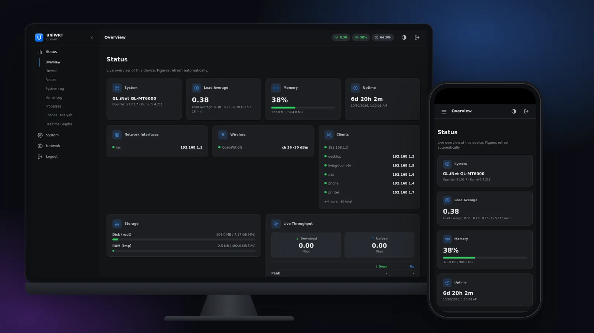

Alpha
Port of derisamedia/luci-theme-alpha by derisamedia
Open in playgroundluci-theme-alpha21 · 60 KB
53 theme packages for routers still on LuCI 21.02, such as the GL.iNet Flint 2 (GL-MT6000) with GL firmware 4.x: five complete themes ported from newer OpenWrt, and 16 reskins on three layouts. Every one is tested on desktop and phone, light and dark.

Complete themes from newer OpenWrt releases, rewritten for 21.02's Lua templates, each with its own look.
Port of derisamedia/luci-theme-alpha by derisamedia
Port of eamonxg/luci-theme-aurora by eamonxg
Port of kiddin9/luci-theme-edge by kiddin9 and GaryPang
Port of nooblk-98/luci-theme-noobwrt by nooblk-98
Port of ox1d3x3/uniwrt-luci by ox1d3x3
Each colour design comes on three layouts: 21.02's own Bootstrap (top menu), Argon (sidebar, the layout GL firmware ships) and Aurora (top bar with a mega menu). Pick a layout on each card.
Download the packages you want (or the zip with all of them), copy them to the router and install them with opkg. Then choose the theme under System → System → Language and Style.
scp -O luci-theme-*.ipk root@192.168.8.1:/tmp/ ssh root@192.168.8.1 'opkg install /tmp/luci-theme-*.ipk'
These are ports. The designs belong to their authors; every package keeps its upstream licence and a NOTICE that says what was changed. Ported, tested and maintained for LuCI 21.02 by @DrorDvash.
| Theme | Author | Upstream |
|---|---|---|
| Alpha | derisamedia | derisamedia/luci-theme-alpha |
| Aurora | eamonxg | eamonxg/luci-theme-aurora |
| Edge | kiddin9 and GaryPang | kiddin9/luci-theme-edge |
| NoobWRT | nooblk-98 | nooblk-98/luci-theme-noobwrt |
| UniWRT | ox1d3x3 | ox1d3x3/uniwrt-luci |
| The 16 reskins | vistrocity | vistrocity/openwrt-luci-themes |
| Bootstrap layout | OpenWrt LuCI | openwrt/luci |
| Argon layout | jerrykuku | jerrykuku/luci-theme-argon |
| Aurora layout | eamonxg | eamonxg/luci-theme-aurora |